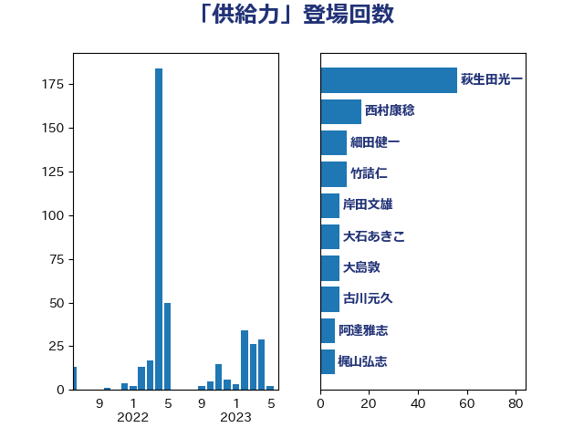

単語「供給力」

| 萩生田光一 | 自由民主党 | 56 回 |
| 西村康稔 | 自由民主党 | 17 回 |
| 細田健一 | 自由民主党 | 11 回 |
| 竹詰仁 | 国民民主党 | 11 回 |
| 岸田文雄 | 自由民主党 | 8 回 |
| 大石あきこ | れいわ新選組 | 8 回 |
| 大島敦 | 立憲民主党 | 8 回 |
| 古川元久 | 国民民主党 | 8 回 |
| 阿達雅志 | 自由民主党 | 6 回 |
| 梶山弘志 | 自由民主党 | 6 回 |
| 山岡達丸 | 立憲民主党 | 6 回 |
| 音喜多駿 | 日本維新の会 | 5 回 |
| 笠井亮 | 日本共産党 | 5 回 |
| 浜野喜史 | 国民民主党 | 5 回 |
| 太田房江 | 自由民主党 | 5 回 |
| 梅谷守 | 立憲民主党 | 4 回 |
| 古賀友一郎 | 自由民主党 | 4 回 |
| 鈴木憲和 | 自由民主党 | 3 回 |
| 石川昭政 | 自由民主党 | 3 回 |
| 石井正弘 | 自由民主党 | 3 回 |
| 山崎誠 | 立憲民主党 | 3 回 |
| 緑川貴士 | 立憲民主党 | 2 回 |
| 片山大介 | 日本維新の会 | 2 回 |
| 庄子賢一 | 公明党 | 2 回 |
| 世耕弘成 | 自由民主党 | 2 回 |
| 鈴木義弘 | 国民民主党 | 1 回 |
| 鈴木淳司 | 自由民主党 | 1 回 |
| 野村哲郎 | 自由民主党 | 1 回 |
| 道下大樹 | 立憲民主党 | 1 回 |
| 谷合正明 | 公明党 | 1 回 |
| 舩後靖彦 | れいわ新選組 | 1 回 |
| 舟山康江 | 国民民主党 | 1 回 |
| 紙智子 | 日本共産党 | 1 回 |
| 福岡資麿 | 自由民主党 | 1 回 |
| 石垣のりこ | 立憲民主党 | 1 回 |
| 玉木雄一郎 | 国民民主党 | 1 回 |
| 片山さつき | 自由民主党 | 1 回 |
| 深澤陽一 | 自由民主党 | 1 回 |
| 浅野哲 | 国民民主党 | 1 回 |
| 浅田均 | 日本維新の会 | 1 回 |
| 池畑浩太朗 | 日本維新の会 | 1 回 |
| 櫛渕万里 | れいわ新選組 | 1 回 |
| 森本真治 | 立憲民主党 | 1 回 |
| 末次精一 | 立憲民主党 | 1 回 |
| 斉藤鉄夫 | 公明党 | 1 回 |
| 平林晃 | 公明党 | 1 回 |
| 山際大志郎 | 自由民主党 | 1 回 |
| 山本太郎 | れいわ新選組 | 1 回 |
| 尾崎正直 | 自由民主党 | 1 回 |
| 宮口治子 | 立憲民主党 | 1 回 |
| 宗清皇一 | 自由民主党 | 1 回 |
| 堀内詔子 | 自由民主党 | 1 回 |
| 北村経夫 | 自由民主党 | 1 回 |
| 勝俣孝明 | 自由民主党 | 1 回 |
| 中野洋昌 | 公明党 | 1 回 |
| 中谷真一 | 自由民主党 | 1 回 |
| 中村裕之 | 自由民主党 | 1 回 |